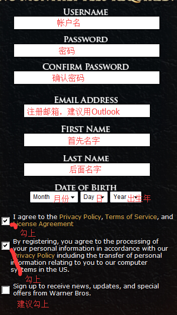
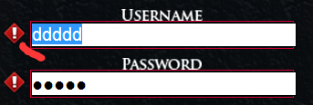
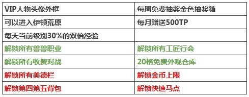
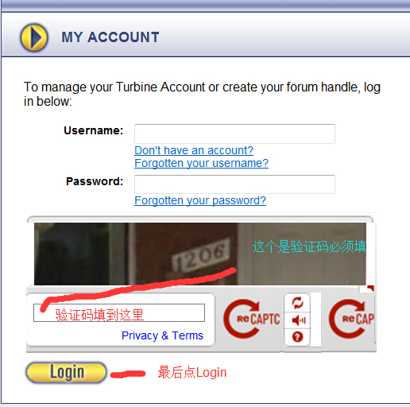
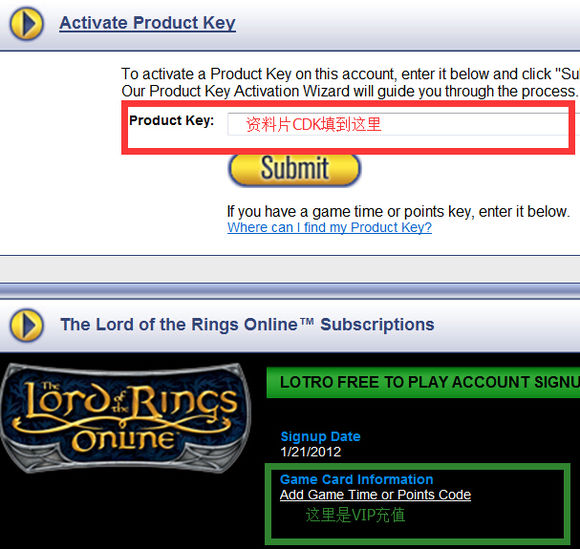
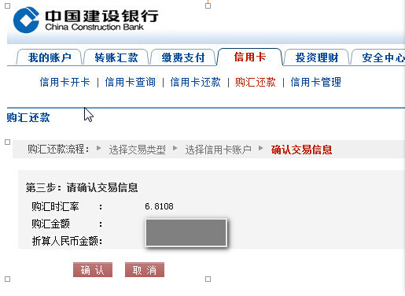

一直在新手Q群帮助大家，其实这游戏大家也就一开始进入有点不熟悉，有些共性的问题可以先看楼上的问答，自行解决不了再向楼主提问，签名图上的Q群号就是传说中的美服新手Q群，加入验证必填项是指环王。
先说下注册，上这个网站http://www.lotro.com/en 国内部份地区IP受到封锁，可用免费VPN解决（后面讲），我是访问二次才能打开，还好。打开后点右上角的Register
指环王注册邮箱选Outlook,到这个网址注册https://login.live.com/，同时邮箱号也是Microsoft 帐户。
注册时请注意填写的生日一定要记住 这个以后不能更改，也在网站查找不到，是被隐藏保密了 生日是方便以后账号的找回用来做初始资料的凭证 ，还有注册的名字和邮箱，邮箱以后可改，但第一个注册邮箱最好记住。有时注册会失败 看看每一项前面是否有显示这个叹号
叹号则表示填写不正确 有时土鳖会要求账号密码必须大小写区别或者数字+字母的要求，有时则什么都不需要…如果还不成功，开个免费VPN再来一次。 最后的办法是加我签名图上的新手QQ群，验证码指环王.我来帮你搞好。
u18.2标准版网盘客户端 http://pan.baidu.com/s/1kV2gqr1 非百度会员凌晨至上午八点不限速能满带宽下载，其它时间300-600K/秒.需要更高画质的高清版去STEAM平台下载
关于常见购买问题的解答： 美服的收费模式采用地图以及资料片买断+月供VIP模式。当然不花钱也能玩，如果你有足够的时间和精力，也是可以做到真正免费玩到满级，但是适当少花点钱可以提高游戏娱乐体验，下面先介绍下VIP解锁的内容： 1.关于VIP包括的其他特权介绍
以上特权红色标识的为VIP过期后依然保留的，其他特权获取后重新上锁，绿色字体的可以通过TP解锁。
2.关于美服资料片的介绍 目前已经开放的资料片包括，莫利亚、幽暗密林、艾辛格、东罗翰、圣盔谷。其中艾辛格和东罗翰的资料片又分成任务包、副本包以及集合包。（包含任务、副本、以及其他附送） 现在主要可买的有四合一与圣盔谷，四合一资料片包含（莫里亚、幽暗密林、艾辛格、罗翰），圣盔谷普通版包含• “圣盔谷”资料片全部内容与功能权限
3.资料片购买方式 第一种可以通过TP在商城中直接购买（很多时候会有打折出现，不需要账号密码） 第二种可以通过指环王官网购买（有[url]http://双币信用卡[/url]或paypal(贝宝)的人可以选择使用，银联卡带1.Visa(维萨卡) 2.Master Card([url]http://万事达卡[/url])3.American Express([url]http://美国运通[/url]卡) ）标记。 第三种可以通过STEAM平台用支付宝购买，对，就是淘宝那家公司的。； 第四种可以通过财付通的国际运通虚拟卡购买，目前是限量开通。
4.新手购买方案推荐 首次接触指环王，首先可以纯免费试玩至30级，（目前免费地图为布雷、夏尔、埃雷德鲁因、故土）30级之后的所有安格玛地图均需收费，此时可以购买1个月、2个月、3个月至半年、一年等VIP时间。至50级之后开始进入第一个资料片阶段，莫里亚。 补充说明四合一资料片包括（莫里亚、幽暗密林、艾辛格、罗翰） 可以接受花点钱的最佳方案，购买一个月或是两个月VIP，来解锁部分功能。目前版本的四合一资料片+圣盔谷普通版。（VIP+四合一+圣盔谷），无需再更多花费，可持续性玩至下一个版本出现。
5.关于资料片的充值 1：首先登陆此网址 https://myaccount.turbine.com 指环王官方的账户管理中心 2：输入自己的账号密码及页面上的验证码信息
3：当你登陆成功之后会在右上角有你的账户名字 4：充值资料片CDK，请将CDK复制粘贴到下图红色框中，然后点击Submit
5：在弹出页面中点击勾选项，选择同意，然后再次点击Submit。
官方经常有买TP双倍赠送活动，这时可以通过STEAM买，但有一些要注意的，我这个贴子讲了购买要点http://tieba.baidu.com/p/2347218014 贴子里的一个链接贴子讲了相关联的如何用原有客户端替换到STEAM文件夹里，这样方便非STEAM客户端不用重新下载完全STEAM客户端，主要就是告诉大家STEAM客户端中指环王的目录路径，这样就可以把原有的客户端移过去，让STEAM软件能顺利启动指环王，从而成功通过STEAM平台购买到打折TP
特别说一下万事达信用卡捆绑PayPal付款的情况：万事达信用卡在支付时可能会使用到PayPal的汇率，我们可以事先将汇率兑换选项做调整，选择直接走银行汇率。步骤如下： 1）点击页面顶部的“用户信息”。 2）点击“财务信息”。 3）在“我的预核准付款”旁，点击“更新”。 4）点击“设置可用资金来源”。 5）选中要更改的万事达信用卡，点击“兑换选项”。 6）选择“在给我的账单中使用卖家列出的币种”。 7）最后”提交“，”保存“即可 温馨提示：根据以上操作，您选中的那张信用卡未来就可以直接走银行的汇率。但如果您使用了其他的卡或新增的卡，可以同样按此方法进行调整。
我是建设银行(建行)双币信用卡，说下这种卡购汇还款步骤，其它银行也差不多：在美元的消费帐单建设银行入帐后，当天存人民币款子当天购汇，步骤如下： 1，登入建设银行网银； 2，选择：信用卡-信用卡查询-查询余额信息； 3，选择：信用卡-购汇还款-下一步-得到购汇美元金额、汇率及折算人民币金额（不确认）； 4，如信用卡人民币账户中有足够金额，则可跳至第6步； 5，在还款借记卡中存入足够金额人民币，然后选择：信用卡-信用卡还款，将此金额转入信用卡人民币账户； 6，选择：信用卡-购汇还款-下一步-确认。 注意： 1，购汇还款交易需在每日22点以前进行。 2，如您人民币账户中的溢缴款不足，购汇将使用您的信用额度进行还款，使用额度购汇的部分自购汇之日起计收每天万分之五的利息。 我补充两条： 两个重要电话，95533,4008200588,前一个主要与信用卡人民币帐户还款有关，后一个主要与信用卡的美元帐户还款有关。可直接打这两个电话进行操作。如果想通过网上操作，可参考上面 1 -6的步骤。 一个时间点，22点，要在22点前进行网上或者电话购汇还款成功，才可成功在第二日生效。 一个切记：一定在信用卡的人民币帐户存入足够的溢缴款
如你是人民币信用卡，那么在指环王美服的消费只能通过PayPal帐户，PayPal帐户国外网站美元消费付款可以走银联通道或VISA、万事达、运通等通道，PayPal帮你美元付款跟你收人民币，但银联非双币卡付不了VIP自动续费、只能买VIP的CDK。 我再来说下信用卡购汇还款(这种情况是自已拿双币卡在指环王官网购买下产生的)、 一、先在信用卡上存入足额人民币，然后电话购汇还款 电话购汇还款只能用人民币购汇偿还信用卡的美元欠款。您必须在同一天内完成存款和电话购汇还款申请。汇率以购汇时点银行的美元卖出价为准，如需查询可致电银行24小时服务热线。如您购汇当日的信用卡人民币账户溢缴款不足，还可利用您的可用额度进行购汇还款，并自购汇之日起支付利息。 二、先在信用卡上存入足额人民币，然后通过建设银行网上银行进行人民币购汇还款（推荐使用，也很方便） 您可使用信用卡人民币账户的溢缴款或额度办理购汇，偿还您美元账户的欠款；如您使用额度购汇，建设银行将对您使用额度部分从即日起计收相应利息；当天办理的购汇还款（含电话购汇和网上购汇）可通过“撤消购汇还款”进行撤消。汇率以网上购汇时，以建设银行的美元卖出价为准。 不过，据实际使用结果看，银行的人民币兑美元汇率似乎要比公开的汇率牌价要高一点点，大概0.01+，另外，最好也不要用信用额度来购汇，因为信用额度购汇是要计算利息的，跟平时的刷卡消费不同哦。 步骤：登录到建行官方网站，选择信用卡，点击购汇还款
选择信用卡账户（如果有多个账户的话），点击下一步，会报告当前信用卡需要还款美元金额及折算的人民币金额。 确认金额后点击确认即可，系统会自动记录购汇状态 个人建议还是自己去银行兑换，然后用美元还美元最好了，或者一次性先预存美元，然后消费。 点击访问中国建设银行网站，建行网址：http://www.ccb.com/
这里说一下绑定信用卡买VIP，除了绑定还可以买KEY，指环王官网上http://www.lotro.com/en/game/vip 、美游网http://www.tfmok2003.com 上面可以买KEY. 绑定分自已绑定和客服人工绑定，自已绑定上官网帐号中心 https://myaccount.turbine.com ，用你的账号密码登陆，其中有个upgrade now点下去，登记绑定你的双币信用卡核准付费，选择月付（$14.99）等等 ，选好后点Submit就可以了，注意默认是自动续费的,，可手动取消预付款权限以终止自动续费，支持双币信用卡和paypal（可用银联卡关联）。注意点就是帐单地址要填写个美国地址，国内地址不行。没有美国地址的请用PayPal或电话打给指环王客户人工绑定。 人工绑定略复杂，下面我具体说明： 方法一： 打电话给土鳖，号码是1-781-407-4020，将信用卡信息直接报给土鳖，那样子绑定速度快。
方法二：此方法较为麻烦，有耐心的可以试试，本人用此法成功绑定建行信用卡。 步骤1：登陆 http://support.turbine.com/ics/support/splash.asp 选择Submit a ticket
步骤2： 填写个人信息，在subject一栏填写：error14002即可，在Description一栏用英语描述一下问题，大概意思就是你的信用卡是中国申请的，不能在官网上面绑定信用卡，请求人工绑定。不会英语的找谷歌翻译，土鳖一般能够看懂。
步骤3： 土鳖会很快给你填写的邮箱回复一封自动邮件，这封邮件没有实际作用，你需要回复这封邮件，将自己遇到的问题描述一遍，提出使用发传真来绑定信用卡的要求，回复需要用英语。
步骤4： 土鳖会在一个工作日给你人工回复邮件，这封邮件会告诉你传真号，需要发送的收到这封邮件后你就可以将信息用传真发给土鳖了，没有传真机的请找淘宝，大概五块钱一封传真。土鳖传真号：1-781-407-4228 需要写在传真里面的信息： 1 The ticket number from the subject line of this email 这个ticket number在回复给你的邮件主题里面有，如： Ticket #24001-55693 2 The username of the account (that is used to log into the game) 账号 3 The first and last name on the credit card (please include any initials) 持卡人姓名 4 The full 16 digit credit card number (15 digits for American Express) 卡号 5 The expiration date of the card 有效日期 6 The 3 digit security code on the back of the card (the 4 digit code from the front for American Express) 安全码 7 The billing address as your credit card company has it on file. Please be sure to include the street, any apartment numbers, city, state/province/area, country and postal code 账单地址 邮编等
步骤5： 大概三个工作日土鳖就会将绑定结果告诉你，但并不是所有的信用卡都能绑定成功 的，土鳖会在邮件里面将不成功的原因说明，本人成功绑定建行信用卡。 如果一切顺利，最多一个星期就能绑定自己的信用卡了